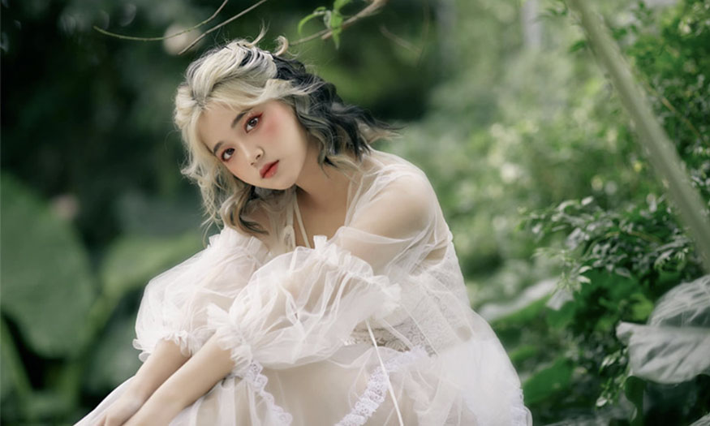
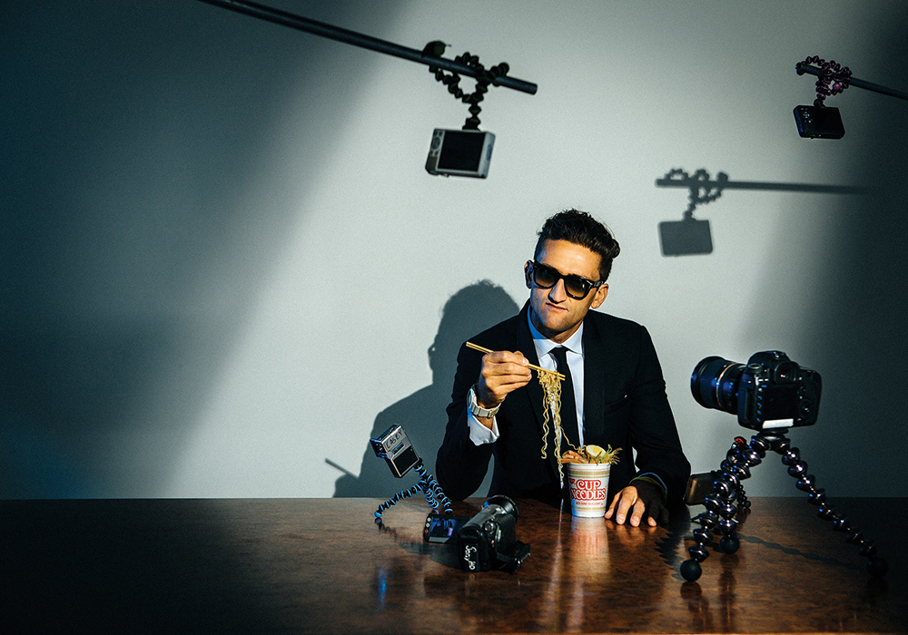

1. Chụp ảnh concept là gì?
Chụp concept được hiểu đơn giản là cách sắp xếp, phong cách và bố cục để tạo nên nội dung và truyền tải cảm xúc của một bộ ảnh.
Chụp concept khác với ảnh thiên nhiên. Mọi thứ từ trang phục, phụ kiện cho đến màu sắc đều được sắp xếp, lên ý tưởng và chọn lọc kỹ càng. Do đó, toàn bộ bộ ảnh sẽ có tính liên quan và gắn kết tương đối cao. Vì vậy, có thể nói chụp ảnh concept là thứ giúp nhiếp ảnh thực hiện những bức ảnh dựa trên chủ thể có sẵn.
2. Ý nghĩa của từ concept chụp ảnh

Ngoài ý nghĩa phác thảo, concept còn có một ý nghĩa khác. Đó là đưa ra một số ý tưởng về một chủ đề. Ví dụ, một buổi chụp hình chân dung, chụp ảnh profile công ty theo concept nghĩa là phong cách chụp ảnh ấn tượng, nổi bật và khiến khách hàng thích thú.
Trong lĩnh vực nhiếp ảnh, concept được hiểu một cách tổng quát là việc định hình phong cách, nội dung và bối cảnh chụp sao cho bức ảnh mang cá tính, phong cách riêng. Nhưng vẫn toát lên được thần thái và sự chỉn chu của người chụp.
3. Tại sao bạn cần chụp ảnh theo concept ?

Chụp ảnh hiệu quả hơn
Quản lý chụp ảnh tốt hơn
Ảnh được chụp đúng concept
4. Cách lên concept chụp ảnh đẹp theo 7 bước

B1: Xác định mục đích concept chụp ảnh
B2: Nghiên cứu và tìm kiếm thông tin liên quan đến concept
B3: Thống nhất trong team về concept chụp ảnh
B4: Lên ý tưởng chụp ảnh theo concept tổng quát
B5: Xây dựng kịch bản chụp tổng quát
B6: Thống nhất với khách hàng về concept chụp ảnh
B7: Xây dựng kịch bản chụp concept chi tiết